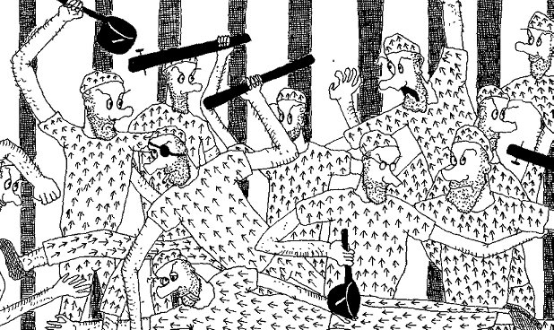

Saturday, March the 27th, 2004
back to: title, date or indexes

Top row, left to right: Frumentor “The Git” Sopwith, forger, strangler, & madcap; Norbert Pew, the first man to commit a hot air ballooning felony in Antarctica; Slobodan Arvids, the so-called “Gruesome Latvian”; Albigensius Limescale, deranged button-maker; unidentified convict; Jim Pail, the Blister Lane poisoner.
Bottom row, left to right: Dan de Doop, dipsomaniac Dutch dentist; Monsignor Flammbo “John” Fowles, gravel-chewing Vatican dropout whose incompetent proofreading of papal encyclicals caused untold mayhem; Oscar Plank, the infamous Bodger's Spinney Spinettist; Lars Hinge, albino saboteur.
Lying on the floor: Jabez Pod, the Anti-Dobson.
Mrs Gubbins' book about the Birdhole Prison Riots will be published in the autumn, whether or not she is released from police custody.